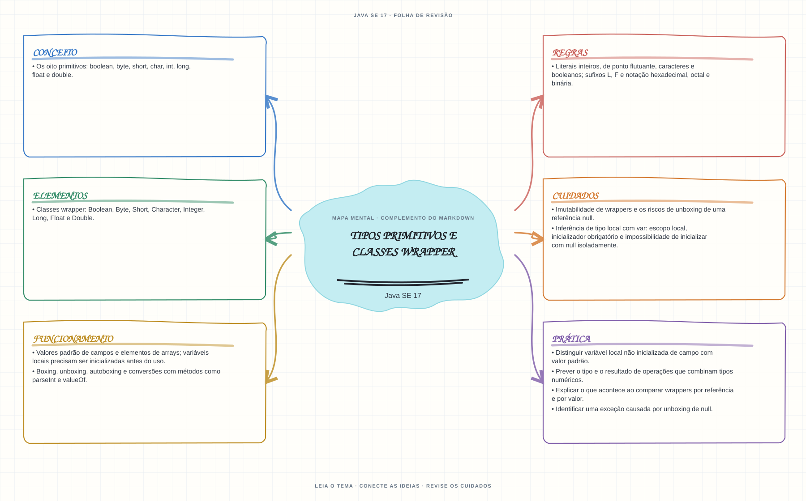

Ver mapa mental deste assuntoDiferenciar valores primitivos, wrappers, inicialização de variáveis e conversões boxing/unboxing.
Primeiro contato: aprenda o conceito e pratique antes de consultar os detalhes de prova. Voltar aos fundamentos se algum termo ainda for novo.
- Leia o objetivo e localize a ideia principal no conteúdo abaixo.
- Preveja o resultado, compile e execute o exemplo.
- Faça a atividade sem copiar a solução e confira a checagem comentada.
EXEMPLO DE CONSOLE
Veja a regra em execução
Antes de executar, anote sua previsão. Compile o exemplo com o JDK e compare a saída observada com as regras deste assunto.
Comandos para compilar e executar
javac -d target/bin src/01-valores-texto-e-datas/tipos-primitivos-e-wrappers/TiposPrimitivosEWrappersExample.java
java -cp target/bin TiposPrimitivosEWrappersExampleA execução imprime o resultado no console para você comparar com sua previsão.
Consultar código-fonte: TiposPrimitivosEWrappersExample.java
public class TiposPrimitivosEWrappersExample {
public static void main(String[] args) {
System.out.println("=== Tipos primitivos e classes wrapper ===");
System.out.println("int guarda um valor primitivo; Integer e um objeto que representa um int.");
int quantidade = 42;
Integer total = quantidade;
int valorConvertido = total;
int valorLidoDeTexto = Integer.parseInt("58");
System.out.println("int quantidade = 42: " + quantidade);
System.out.println("Integer total = quantidade (autoboxing): " + total);
System.out.println("int valorConvertido = total (unboxing): " + valorConvertido);
System.out.println("Integer.parseInt(\"58\") converte texto para int: " + valorLidoDeTexto);
System.out.println("Use equals para comparar valores de wrappers: "
+ Integer.valueOf(1000).equals(Integer.valueOf(1000)));
}
}
PRATIQUE AGORA
Faça uma pequena alteração por conta própria
Declare uma quantidade como int, converta-a para Integer e imprima os dois valores. Depois, tente converter o texto "abc" com Integer.parseInt e observe a exceção.
Concluído quando: o programa compilar, produzir o resultado esperado e você conseguir explicar a regra aplicada.
CHECAGEM RÁPIDA · Tipos primitivos e classes wrapper
O que ocorre ao atribuir um wrapper null a uma variável primitiva?
Conferir resposta comentada
O unboxing tenta obter o valor primitivo e lança NullPointerException; uma variável local também precisa estar inicializada antes do uso.
Estude
- Os oito primitivos:
boolean,byte,short,char,int,long,floatedouble. - Valores padrão de campos e elementos de arrays; variáveis locais precisam ser inicializadas antes do uso.
- Literais inteiros, de ponto flutuante, caracteres e booleanos; sufixos
L,Fe notação hexadecimal, octal e binária. - Classes wrapper:
Boolean,Byte,Short,Character,Integer,Long,FloateDouble. - Boxing, unboxing, autoboxing e conversões com métodos como
parseIntevalueOf. - Imutabilidade de wrappers e os riscos de unboxing de uma referência
null. - Inferência de tipo local com
var: escopo local, inicializador obrigatório e impossibilidade de inicializar comnullisoladamente.
Verifique se consegue
- Distinguir variável local não inicializada de campo com valor padrão.
- Prever o tipo e o resultado de operações que combinam tipos numéricos.
- Explicar o que acontece ao comparar wrappers por referência e por valor.
- Identificar uma exceção causada por unboxing de
null.
Como este capítulo se relaciona com cada exame
Fundamentos reaproveitáveis; valide APIs e objetivos específicos de Java 8.
Base de estudo deste portal; confirme o mapeamento com o blueprint vigente.
Conceitos úteis; confira as APIs e mudanças de linguagem em Java 21.
Orientação editorial sobre reaproveitamento do material; não representa objetivos oficiais nem garante cobertura do exame. Consulte o comparativo e as fontes da Oracle.